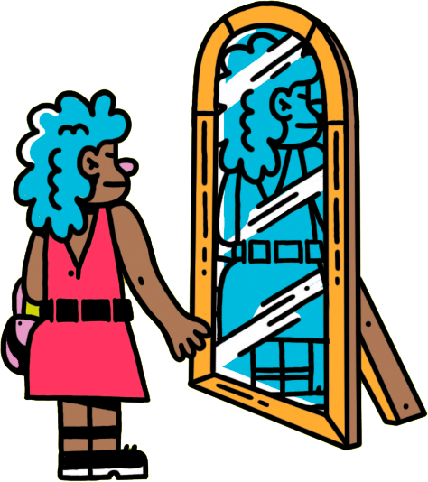

Descubra as atividades
Ao encontrar os códigos no pôster e completar as atividades, você acumula donuts para liberar o desafio desta edição.
??
1
3 xAtividade encontrada!!!
Pense rápido!
Neste desafio, não basta saber soletrar, é preciso conseguir ler de trás para frente.
Reúna a família, aperte o play para ouvir uma palavra pronunciada de trás para frente e veja quem consegue descobrir qual é a palavra primeiro. Só tem uma regra: não vale escrever!
??
2

 2 x
2 xAtividade encontrada!!!
Você Sabia?
Se você reparar bem, vai ver que no pôster o Berje desenhou o Godzilla apaixonado pelo King kong. Mas no cinema, os dois gigantes são inimigos!
Não sabe muito bem que é o Godzilla? Aqui vão 5 curiosidades sobre um dos monstros mais famosos da cultura pop:
1
Godzilla foi criado no Japão e apareceu pela primeira vez em 1954. Ele ganhou uma estrela na calçada da fama de Hollywood quando completou 50 anos.

2
A aparência de Godzilla foi inspirada em várias espécies de dinossauros, como o tiranossauro, o iguanodonte e o estegossauro.

3
Já foram feitos 39 filmes sobre o Godzilla e mais um será lançado no ano que vem, no qual Godzilla enfrentará novamente o king kong. Destes, 32 filmes são japoneses e 8 são norte-americanos.

4
Todos os filmes japoneses do Godzilla até 2004 foram gravados com atores usando roupas de monstros, muito quentes e muito pesadas.
5
Godzilla também existe nos quadrinhos. A Marvel Comics publicou uma série do monstro de 1977 a 1979, e, recentemente, a Dark Horse publicou novas histórias sobre ele.

Assista à batalha entre os dois no filme de 1962:
??
3
 5 x
5 xAtividade encontrada!!!
Construa uma fonte que espirra água!
Materiais:
Canudo
Agulha
Potinho
Fita adesiva
Água
Palito de churrascoComo fazer:
1
Corte o canudo ao meio. Pegue uma das metades e use uma agulha ou alfinete para fazer um furo no meio do canudo. Coloque um palito de churrasco através do furo.
2
Use uma tesoura para fazer um meio-corte no canudo, há aproximadamente 1 cm à direita e outro 1 cm à esquerda do palito. Cuidado para não cortar todo o canudo, apenas a parte de cima.

3
Ajuste a altura do canudo no palito para que a ponta do palito e as pontas dobradas do canudo se encontrem. Use fita adesiva para prender as três pontas no lugar certo, sem cobrir nenhuma das aberturas do canudo.
4
Encha um pote de vidro com água e segure o palito de forma que a ponta do triângulo fique submersa. Dica: Faça essa parte em algum lugar que possa molhar!

5
Com a parte de cima do triângulo fora da água, gire o palito entre as palmas da sua mão e veja sua fonte funcionar!
Conquiste 20 donuts e libere o desafio desta edição!
Desafio